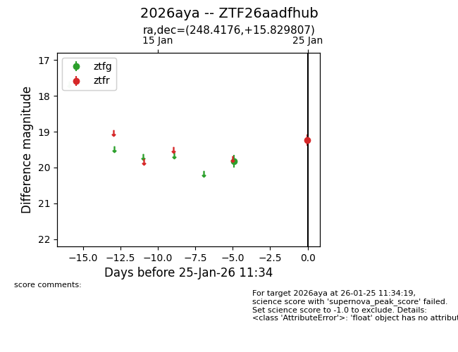
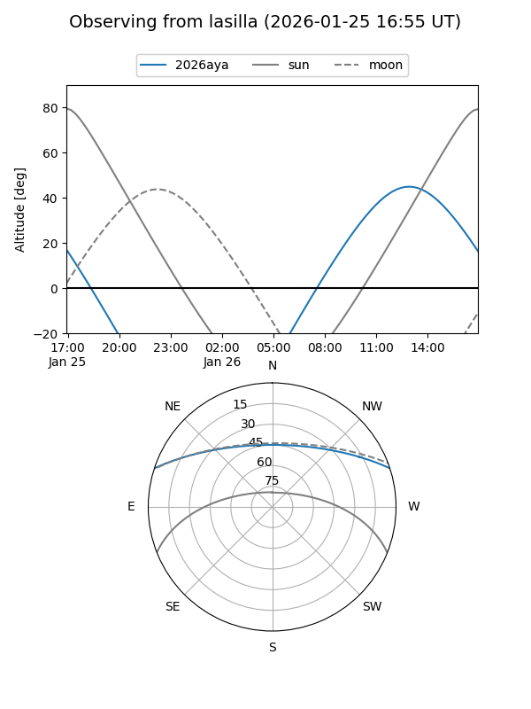
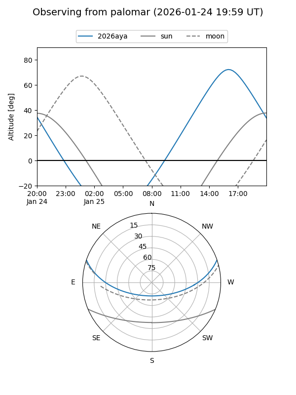
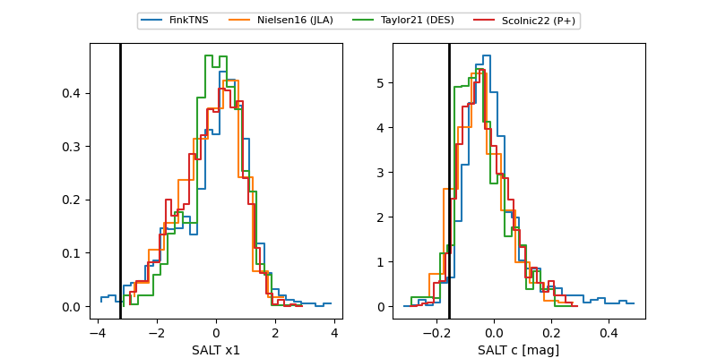

2026aya
Target 2026aya at 2026-01-25 11:36
Aliases and brokers:
FINK: link
Lasair: link
ALeRCE: link
TNS: link
YSE: link
alt names
ZTF26aadfhub (ztf,fink_ztf)
2026aya (tns,yse)
Coordinates:
equatorial (ra, dec) = 248.4176,+15.82981
equatorial (HMS+DMS) = 16:33:40.22,+15:49:47.31
galactic (l, b) = (32.5464,+37.49164)
Flags:
Photometry:
last ztfg=19.83, ztfr=19.23
1 ztfg, 1 ztfr detections
Lightcurve

Visibility


Additional plots
